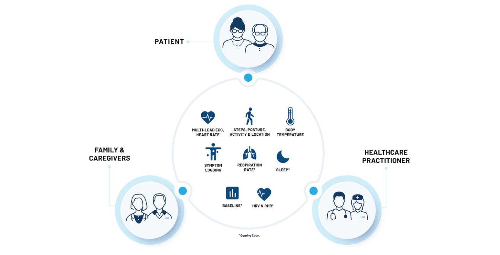
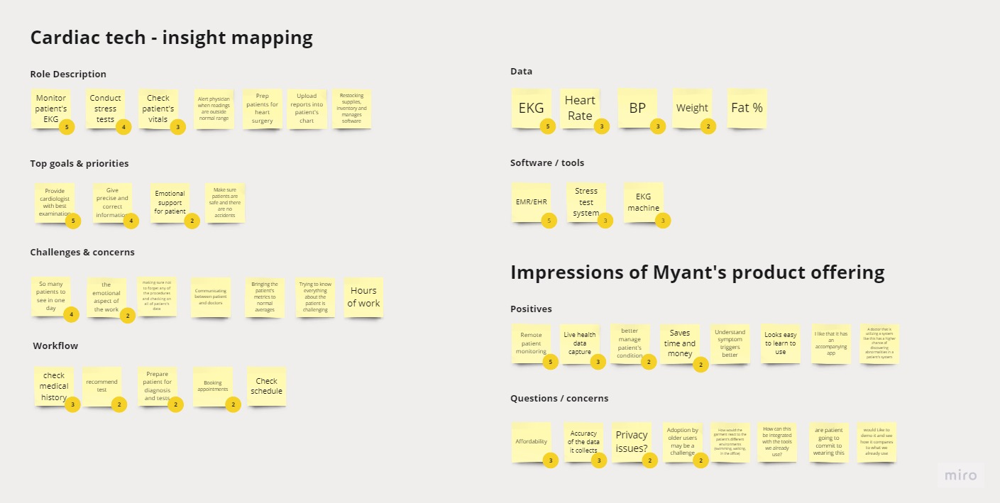
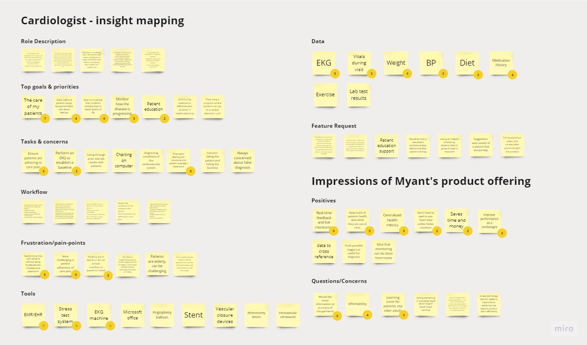
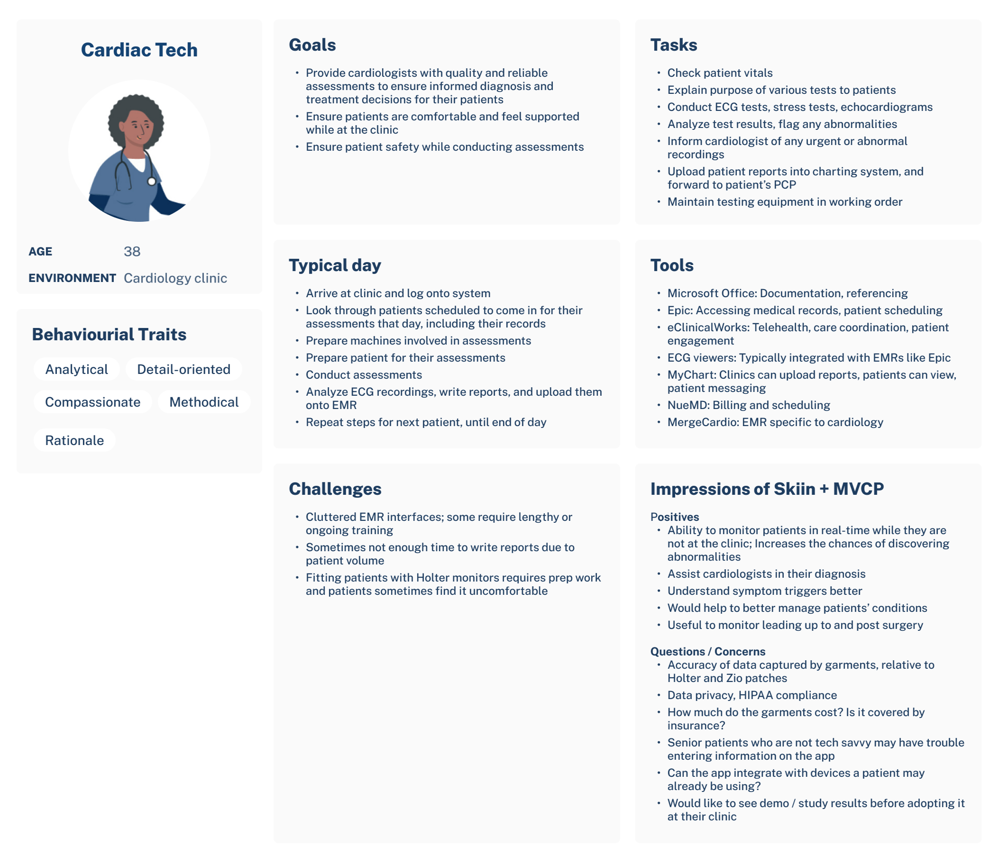
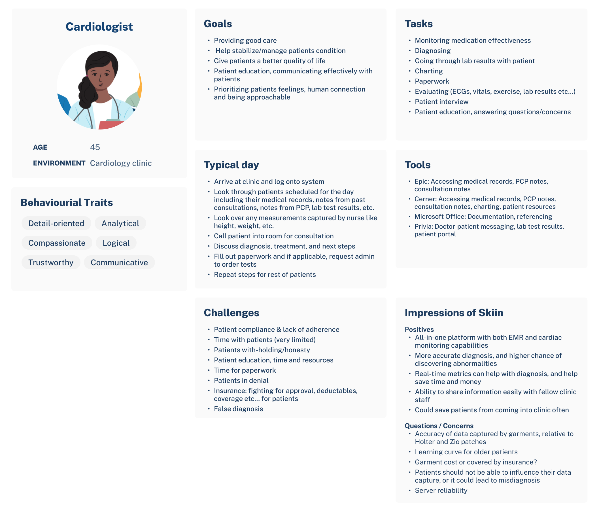
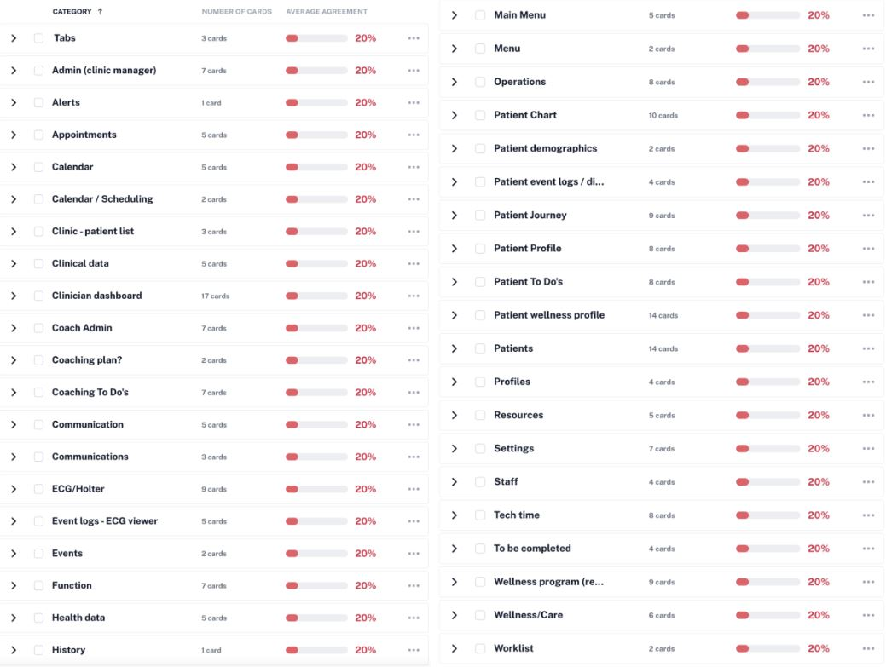
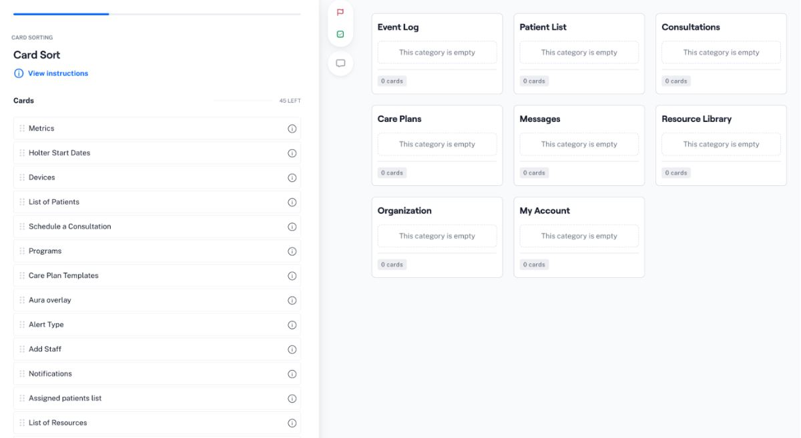
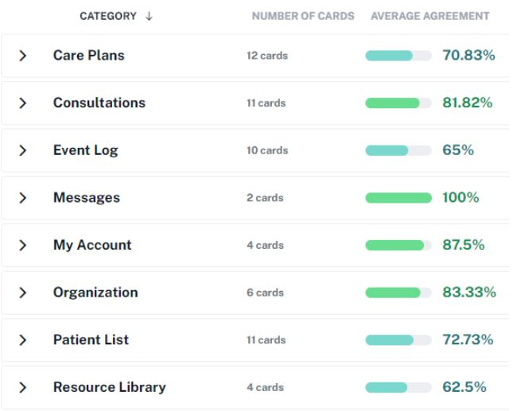

Myant
Formative research · Summative test · SaMD
Company overview
Myant’s product ecosystem empowers its users to better manage their cardiovascular health and stay connected to those involved in their care. The company’s proprietary Skiin garments capture medical-grade ECG and other biometrics that are relayed to a mobile app, where users track their health and log symptoms. Users enrolled as patients at partnered clinics will have their symptoms and associated ECG reviewed by healthcare professionals (HCPs) through the Myant Virtual Clinic Portal (MVCP), which is a Class II Software as a Medical Device (SaMD).
My role
I joined Myant during its transition from a wellness to a medical focus, which introduced design control and a more phased approach to product development. I co-managed a UX team of 5, where I wore many hats to support work across the UX pipeline ranging from research, design, testing, and documentation. This case study discusses the approach and findings at a high-level on select areas of the MVCP’s development process such as persona research, site architecture, and summative testing, while respecting non-disclosure agreements.
Tools 🔧
Figma, Miro, Usertesting.com, Mazo.co, Google Forms
Formative research
Background
HCPs run clinical operations on a tight timeline in order to provide care to the most patients possible on a given day. This includes optimizing time spent on different software. As a result, it was imperative to design the MVCP to be easily adoptable as part of clinical practices and mental models. We specifically aimed to further define the personas of cardiac technicians and cardiologists, as they are the primary intended users of the MVCP.
Methods and findings
We set up an unmoderated online survey to gather qualitative data from both user groups. Participants were screened and recruited through Usertesting.com, and Myant’s network of clinics. We generated a series of questions to better understand the motivations, needs and pain points of cardiac technicians and cardiologists. We also included a video that provided a concept overview of Skiin garments, mobile application, and MVCP. Below is a sample of questions to which participants provided a combination of verbal and written responses.
- What are the main tasks and responsibilities in your role?
- Can you describe your workflow, including any challenges faced?
- Please list any digital software you use and how you use it
- (In reference to the MVCP video) What are your first impressions of what you just watched? What is the most compelling part of the product to you? What is the least compelling?
The responses were mapped onto a Miro board, as seen below.
 As a follow up, we brought back some participants for a live, moderated interview. We dove deeper into topics that emerged from the unmoderated surveys such as patient compliance and adherence, types of information that aid the diagnostic process, tools used, and consultations. Questions included:
- How are patients referred to your clinic and describe the onboarding process? What are some challenges during this process?
- What are benefits and challenges associated with prescribing patients Holter monitors? Would Myant’s product offering help alleviate any challenges?
- How would having other biometrics alongside ECG data help with your diagnostic process?
- How do you keep track of patient health post-consultation?
Based on all the insights gathered, we had enough to form a persona card for both user groups outlining their motivations, priorities, pain points, and how Myant's product offering may benefit their practice.
 Further down the research phase, we conducted card sorting exercises on Maze.co to understand how participants would structure and access various pieces of information on the MVCP. We first conducted an unmoderated open card sort, where participants sorted information into groups and labeled them based on their own understanding and perspective. Despite the low agreement percentages, many group labels shared similar words. We referred to session recordings to understand the participants' reasoning.
We then conducted a closed card sort, where participants sorted cards into categories created by us. The closed card sort set up and results are shown in the screenshots below. Participants categorized cards into similar groupings as evidenced by the high rates of agreement, which informed the MVCP's site architecture.
 Orchestrating a summative test
Background
A summative is a usability test to validate that medical devices, like the MVCP, are safe and effective for their intended use. This was a part of our regulatory submission to Health Canada to obtain a Class II Software as a Medical Device clearance.
Objectives
The purpose of our summative test was to determine whether the MVCP conforms to the usability engineering guidelines set by IEC-62366. Objectives include assessing:
- Proper use of interfaces
- Ability for users to understand and follow instructions
- Mitigations for potential errors or adverse events
Recruiting target participants
We worked with our network of clinics to recruit a combination of 7 cardiac technicians and cardiologists who were unfamiliar with using the MVCP. For the summative test, they would perform key tasks associated with the MVCP’s indication for use like symptom log and ECG data review.
Test environment setup
We worked with the software team to create a test environment, including mock patients, symptoms and ECG data for participants to interact with. Additionally, there was a test space allocated at the partnered cardiac clinic to simulate representative conditions.
Methods
Each test session was conducted by a moderator and an observer, lasting between 30-45 minutes in duration. We began the test session by understanding our test participants’ proficiency and comfort with using digital technology in order to uncover potential correlations with task performance post-test. Using a 7-point Likert scale afforded an appropriate balance between objectivity while allowing some nuance, and this scale was used through much of the summative test.
- What is your age range?
18-24, 25-34, 35-44, 45-54, 55-64, 65+, Prefer to not say - What would you rate your overall comfort level with technology?
1 Not at all comfortable → 7 Very comfortable - How would you describe your ability to use technology such as computer software?
1 Not able at all → 7 Very able - I am open to, or regularly adopt, new technologies as part of my practice.
1 Strongly disagree → 7 Strongly agree
The moderator then read out the scenario, followed by the participant performing the task on the MVCP. The participant was encouraged to think out loud as they performed the task. The observer noted the path taken by the user to complete the task and validated that against the usability specifications. After the participant completed the task, they answered questions on Google Forms relating to the task such as:
-
Objective questions
Were you able to change the ECG viewer settings?
Yes, I was able to / No I was unable to
Acceptance criteria: Yes, I was able to (Acceptable) / No, I was unable to (Unacceptable) -
Satisfactions questions
I was able to review ECG data efficiently.
1 Strongly disagree → 7 Strongly agree
Acceptance criteria: 1-3 Negative / 4 Neutral / 5-7 Positive -
User experience questions
While using the ECG viewer, I felt…
1 Unsure → 7 Confident
Acceptance criteria: 1-3 Unacceptable / 4-7 Acceptable -
Safety and risk assessment questions
There was adequate safeguard against accidental removal of patients.
1 Strongly disagree → 7 Strongly agree
Acceptance criteria: 1-3 Unacceptable / 4-7 Acceptable -
Time on task questions
The time it took to create my account felt...
1 Too long → 7 Appropriate length
Acceptance criteria: 1-3 Negative / 4 Neutral / 5-7 Positive -
Overall impression questions
Based on the tasks performed today, I found the MVCP easy to use.
1 Strongly disagree → 7 Strongly agree
Acceptance criteria: 1-3 Negative / 4 Neutral / 5-7 Positive
Please provide any final comments on the usability and safety pertaining to the tasks performed today
Results
The Likert scores for each task were averaged and evaluated against their respective acceptance criteria. The averages ranged between 5.42 and 7. There were no significant usability issues identified as all participants were able to complete their tasks associated with their roles, with varying levels of ease. Feedback and overall impressions on the MVCP provided by participants at the end of their session, along with the tasks that scored on the lower end were used to inform improvements for future releases.